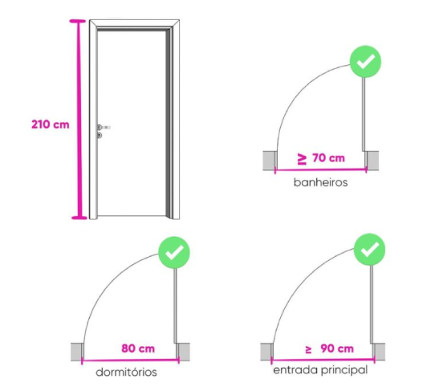
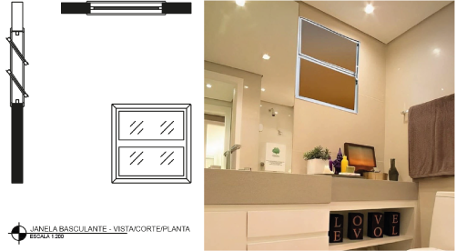
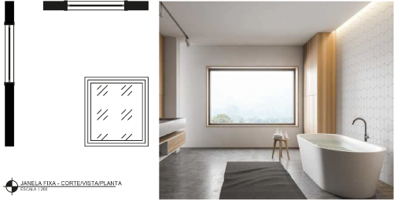

As especificações técnicas e os detalhamentos são essenciais para o sucesso do projeto, pois garantem que o desenho seja executado conforme planejado. Os detalhamentos podem ser divididos em várias categorias, incluindo áreas molhadas, esquadrias, sistemas de aberturas e guarda-corpo, e são representações gráficas importantes, contribuindo significativamente para a qualidade e a estética do projeto e garantindo que ele seja executado conforme planejado e atenda às necessidades e expectativas do cliente. Além disso, detalhar esses elementos facilita a comunicação com os executores e fornecedores durante a fase de construção e instalação do projeto.
Entenda agora cada um desses detalhamentos essenciais no projeto executivo de design de interiores.
As áreas molhadas são aquelas expostas à umidade ou que podem entrar em contato direto ou indireto com água. Essas áreas são especialmente importantes em móveis destinados a espaços como banheiros, cozinhas, lavanderias ou outras áreas nas quais a umidade é uma preocupação constante.
A área molhada é essencialmente o rebaixo feito na pedra ao redor da cuba. É usada para manusear objetos molhados ou escorrer louça, por exemplo, sem molhar outras partes da bancada. Esse aspecto é crucial em várias situações, seja para evitar molhar o chão ou danificar equipamentos na bancada, como cooktops ou eletrodomésticos.
A bancada de trabalho das áreas molhadas é onde as pessoas se inclinam para realizar suas atividades. Geralmente, as bancadas consistem em uma superfície horizontal, que pode ser dividida entre bancada seca e bancada molhada, no caso de cozinhas, ou apenas molhada, como é comum em banheiros.
Bancada seca e bancada molhada
Fonte: Silvia Helena (s. d.)
Fotografia da parte inferior de uma bancada de cozinha, com fogão e forno, gavetões e cuba. Sobre a bancada há acessórios de cozinha. Na parede há uma torneira. Na parte superior, um depurador e um aéreo.
Bancada molhada
Fonte: Melo (2022)
Fotografia de um banheiro. Da esquerda para a direita estão o box e o vaso sanitário. Sobre o vaso há prateleiras com plantas e ao lado uma bancada com cuba. Sobre a bancada há um espelho.
Para as áreas molhadas, é essencial escolher materiais que sejam duráveis, resistentes à umidade, fáceis de limpar e que mantenham sua estética ao longo do tempo. Alguns materiais indicados são:
Na unidade curricular Realização da concepção técnica de projetos de interiores, você teve acesso a informações detalhadas sobre todos os materiais recomendados para áreas molhadas. Revisite essa unidade curricular para obter informações completas e poder especificar corretamente os materiais em seus projetos.
Conheça agora as especificações técnicas das dimensões das áreas molhadas. Para começar, entenda os componentes da bancada, que são: área molhada, borda da área molhada, rodabancada, cuba e torneira.
Componentes da bancada
Fonte: Senac EAD (2024)
Desenho que representa um tampo de bancada com seus componentes: borda da área molhada, cuba, torneira, frontão e área molhada.
É a área de trabalho.
Tem a função de evitar o escoamento da água.
Também conhecido como espelho, tem função de dar acabamento entre a bancada e a parede, além de proteger a parede de respingos.
As bancadas de trabalho na cozinha são utilizadas para diversas atividades simultâneas, como cortar, descascar e preparar alimentos, apoiar panelas quentes, utilizar eletrodomésticos específicos, lavar e higienizar materiais e alimentos, entre outros. Quanto às dimensões, o comprimento geralmente varia de 1,20 m a 1,80 m, podendo ser maior dependendo do espaço disponível no ambiente. A profundidade usual varia entre 50 cm e 70 cm. A bancada é dividida entre a área molhada e a área seca, que podem ser feitas do mesmo material ou de materiais diferentes, conforme o acabamento do projeto, e podem ser fisicamente separadas ou integradas.
É importante observar que, se as bancadas forem integradas, a bancada molhada deve ser de 1 a 2 centímetros mais baixa do que a bancada seca, mantendo a altura ideal de 90 centímetros.
As imagens a seguir apresentam os dimensionamentos de área molhada em cozinhas, lavanderias e banheiros, respectivamente.
Dimensionamentos área molhada (cozinha)
Fonte: Senac EAD (2024)
Detalhamento de pedra para cozinha: planta baixa, isométrica, vista frontal e corte.
Dimensionamentos área molhada (lavanderia)
Fonte: Senac EAD (2024)
Detalhamento de pedra para lavanderia: planta baixa, isométrica, vista frontal e corte.
Dimensionamentos área molhada (banheiro)
Fonte: Senac EAD (2024)
Detalhamento de pedra para banheiro: planta baixa, isométrica, vista frontal e corte.
O frontão geralmente tem uma altura padrão de 5 a 15 cm, mas, em alguns projetos, pode chegar até 30 cm, dependendo do conceito do projeto.
Os rebaixos para a área molhada podem ser realizados de três maneiras distintas, cada uma com características e processos de fabricação diferentes, que influenciam no custo da execução. Confira quais são esses tipos e modelos:
Este é o modelo com cantos retos, produzido pela emenda de duas ou mais peças. Nesse modelo, a parte onde fica a cuba ou o tanque é mais baixa que o restante da bancada e esse desnível é proporcional à espessura do material utilizado, geralmente em torno de 2 cm (espessura padrão da maioria das pedras).
Aplicação de rebaixo tradicional
Fonte: Bella Granitos (s. d.)
Fotografia de uma cozinha. Da esquerda para a direita: bancada com tampo de mármore dividida em área molhada com a cuba e área seca com o fogão.
É bastante semelhante ao modelo tradicional, pois utiliza a mesma espessura da pedra para o desnível, porém seu processo de fabricação é diferente: uma peça inteira é colada por baixo para evitar emendas visíveis nos cantos, que são arredondados. É ideal para bancadas de até 2 metros de comprimento ou que não requerem emendas.
Aplicação de rebaixo americano
Fonte: Bella Granitos (s. d.)
Fotografia de uma cozinha. Da esquerda para a direita: bancada com fogão na área seca, na sequência está a área molhada e o espaço da cuba, em seguida a área seca com detalhe em L.
Também conhecido como rebaixo usinado, esse tipo não envolve a colagem de outras peças e não tem emendas. O desnível da área molhada é obtido com o desgaste da própria pedra: uma máquina lixa o material até alcançar um rebaixo de aproximadamente 0,5 cm. Seus cantos são arredondados. É importante consultar a loja de pedras sobre a viabilidade desse acabamento, pois nem todos os materiais são adequados para esse tipo de desgaste. Confira na imagem esse tipo de aplicação.
Aplicação de rebaixo italiano
Fonte: Bella Granitos (s. d.)
Fotografia de uma cozinha. Ao fundo há armários, na frente, bancada com tampo de mármore e cuba dupla, sobre a qual estão aéreos com iluminação.
Quando se trata de áreas molhadas, outro ponto relevante são os seus acabamentos, como: bordas, cantos e impermeabilizações. Quanto às bordas para a área molhada, elas podem ser realizadas como mostra esta imagem:
Tipos de bordas para área molhada
Fonte: Adaptado de Marmoraria Inconfidentes (s. d.)
Ilustração que expõe nove tipos de bordas para áreas molhadas. De cima para baixo: reto simples, reto com encaixe, ½ boleado simples, reto duplo, boleado simples, ½ boleado duplo, reto 45°, boleado duplo, duplo boleado duplo, boleado triplo e reto 45° com 10 cm.
Quanto aos acabamentos dos cantos, as possibilidades disponíveis são as seguintes:
Tipos de acabamentos para cantos
Fonte: Adaptado de Marmoraria Inconfidentes (s. d.)
Ilustração que expõe 25 tipos de acabamentos para cantos. De cima para baixo: simples, simples duplo, sanduíche, bisoto, chanfrado simples, chanfrado invertido, boleado, boleado duplo, boleado triplo, ½ cana dupla, ½ cana, ½ cana invertida, ½ cana com friso, ½ cana com boleado, boleado com rebaixo, boleado duplo 2, boleado triplo 2, sanduíche recuado, 45º, ½ cana duplo, ½ cana triplo, chanfrado duplo, rebaixo, rebaixo invertido e espelho ½.
As esquadrias são os elementos estruturais que compõem as aberturas de uma edificação, como janelas, portas, portões e venezianas. Elas representam até 20% do custo total de uma construção e são fundamentais não apenas para garantir a segurança do imóvel, mas também para compor seu visual estético.
Suas principais funções consistem em:
Toda a esquadria é composta de três elementos básicos:
Confira a seguir cada um desses elementos:
A folha de uma esquadria é a parte móvel da janela, da porta ou do portão, que pode ser aberta ou fechada para permitir acesso, ventilação ou iluminação. Em outras palavras, é a parte da esquadria que pode ser movida em relação ao batente, que é a parte fixa.
Porta com duas folhas abertas
Fonte: Pexels (2024)
Fotografia de uma sala de estar com uma porta de acesso para um corredor estreito. A porta é em madeira pintada na cor branca, com duas folhas abertas, uma para cada lado.
As folhas das esquadrias podem variar em design e funcionamento, conforme o tipo de esquadria e as necessidades específicas do projeto. Por exemplo, as folhas das janelas podem abrir na vertical (janelas de abrir), na horizontal (janelas de correr) ou inclinar-se (janelas basculantes), enquanto as portas podem ser pivotantes, abrir para dentro ou para fora, ou deslizantes, entre outras opções de abertura.
As folhas, os batentes e as guarnições podem ter características e qualidades completamente diferentes dependendo do material utilizado.
Versáteis e tradicionais, as esquadrias de aço têm um preço acessível no mercado e suportam diversos sistemas de abertura. Elas podem ser adquiridas prontas ou feitas sob medida. No entanto, são suscetíveis à oxidação e requerem manutenção frequente, o que as torna menos adequadas para áreas litorâneas.
São mais caras que as de aço, mas exigem menos manutenção. Resistentes e duráveis, são ideais para áreas externas e estão disponíveis em diversas cores. No entanto, seu isolamento termoacústico pode ser inferior, o que pode ser compensado com o uso de vidros duplos e perfis maiores.
Ganham cada vez mais espaço devido à alta resistência, durabilidade e baixa necessidade de manutenção. Estruturadas internamente com aço, são produzidas em diferentes tons e podem simular efeitos de madeira. Oferecem excelente isolamento acústico e térmico, sendo uma opção eficaz desde a sua composição, por ser isolante, ao contrário do alumínio, que é condutor.
Sofisticadas e versáteis, proporcionam um toque elegante às edificações e garantem conforto térmico e acústico. No entanto, exigem manutenção regular, como vernizes e proteção contra cupins, e não são recomendadas para ambientes úmidos.
Dependendo de sua resistência, podem ser compostas por perfis metálicos finos que integram ambientes internos e externos sem interferências visuais significativas. São mais frágeis a impactos e não oferecem todos os sistemas de abertura, mas, quando combinadas com materiais como alumínio ou PVC, podem proporcionar a segurança adequada.
Ao escolher o material para as folhas das esquadrias, é essencial considerar cuidadosamente características como desempenho térmico e acústico, resistência à umidade e corrosão, estética, durabilidade e custo. Esses fatores são fundamentais para garantir não apenas a funcionalidade e segurança das esquadrias, mas também a satisfação estética e o conforto dos usuários a longo prazo.
Com relação às dimensões, as portas para banheiros geralmente têm 60 cm ou 70 cm de largura. Portas com 80 cm de largura são mais comuns em quartos. Portas mais largas, com 90 cm ou 100 cm, são frequentemente utilizadas em áreas externas da casa, como na entrada, onde há necessidade de uma abertura maior e que também contribui para a estética do imóvel.
Medidas de portas
Fonte: Club ArqExpress (s. d.)
Quatro ilustrações que mostram a vista frontal de uma porta e depois as vistas superiores delas. No canto superior esquerdo, a vista frontal com sua medida de 210 cm. No lado direito, a vista superior com indicação de medida de 70 cm ou mais para banheiros. No canto inferior esquerdo, a vista superior com indicação de medida de 80 cm para dormitórios. Ao lado, a vista superior com indicação de medida de 90 cm ou mais para entrada principal.
Segundo a ABNT NBR 15930-1/2011, as dimensões das folhas das portas internas em milímetros (mm) são as seguintes: a altura pode ser de 2.100 mm ou 2.440 mm; a largura pode ser de 600 mm, 700 mm, 800 mm ou 900 mm; e a espessura pode ser de 35 mm ou 40 mm. O quadro a seguir especifica, conforme essa norma, as dimensões de acordo com a massa das portas.
| Descrição | Dimensões da folha (mm) de porta interna para os padrões (segundo sua massa) | ||
|---|---|---|---|
| Leve | Médio | Pesado | |
| De 6 até 10 kg/m² | Acima de 10 até 20 kg/m² | Acima de 20 até 30 kg/m² | |
| Altura | 2100 | 2100 | 2100 2400 |
| Largura | 600 700 800 900 |
600 700 800 900 |
600 700 800 900 |
| Espessura | 35 | 35 | 40 |
Dimensões da folha de porta interna para os padrões segundo sua massa
Fonte: Adaptado de ABNT (2011)
Segundo a ABNT NBR 15930-1/2011, as dimensões de portas externas são as seguintes: a altura pode ser de 2.100 mm ou 2.440 mm; a largura pode ser de 800 mm, 900 mm, 1.000 mm ou 1.100 mm; e a espessura pode ser de 35 mm, 40 mm ou 45 mm. O quadro a seguir especifica, conforme essa norma, as dimensões de acordo com a massa das portas externas.
| Descrição | Dimensões da folha (mm) de porta de entrada e externa para os padrões (segundo sua massa) | ||
|---|---|---|---|
| Leve | Médio | Pesado | |
| Acima de 10 até 20 kg/m² | Acima de 20 até 30 kg/m² | Acima de 30 kg/m² | |
| Altura | 2100 | 2100 2400 |
2100 2400 |
| Largura | 800 900 1000 1100 |
800 900 1000 1100 |
800 900 1000 1100 |
| Espessura | 35 40 |
40 45 |
45 |
Dimensões da folha de porta de entrada e externa para os padrões
segundo sua massa
Fonte: Adaptado de ABNT (2011)
Quanto às janelas de madeira, as medidas mais comuns em diferentes ambientes são geralmente as seguintes: 0,60 x 0,80 m para cozinhas; 0,60 x 0,60 m para banheiros; e 1,20 x 1,20 m para quartos e salas.
A medida ideal para janelas pode variar de acordo com diversos fatores, como o tamanho do espaço, o estilo arquitetônico da construção, a orientação solar, a necessidade de privacidade e as normas locais de construção. Confira então algumas considerações gerais ao determinar as medidas ideais para janelas:
As janelas devem estar proporcionais ao tamanho da parede em que estão localizadas e ao tamanho geral do ambiente.
As janelas devem ser dimensionadas para permitir uma quantidade adequada de luz natural e ventilação para o espaço.
A altura das janelas pode variar dependendo da altura do pé-direito do espaço e da preferência estética.
A largura das janelas deve ser definida em harmonia com as proporções da parede, tanto largura quanto altura, a fim de garantir um visual esteticamente agradável.
O tipo de abertura da janela também pode influenciar suas medidas ideais. Por exemplo, janelas de correr ou janelas basculantes podem exigir medidas diferentes das janelas de abrir convencionais.
É importante verificar as regulamentações locais de construção e zoneamento antes de determinar as medidas das janelas, pois pode haver restrições em relação ao tamanho e à localização das aberturas.
Não há uma normatização nem uma medida única e universalmente ideal para janelas, pois isso dependerá das características específicas do espaço no qual serão instaladas e das preferências pessoais dos usuários.
Conheça agora os tipos de aberturas existentes para esquadrias:
Desliza lateralmente sobre trilhos. Pode ser configurada com até seis folhas, dependendo da largura da parede, pois o trilho aumenta de acordo com o número de folhas. As folhas podem ser móveis individualmente ou combinadas com partes fixas, oferecendo flexibilidade na configuração conforme a necessidade do projeto.
Detalhamento técnico e ambiente com janela de correr
Fonte: Astra (s. d.)
Desenho com detalhamento técnico da janela de correr e, ao lado, fotografia de uma sala de estar. Ao fundo, parede com uma janela de correr; na frente, sofá de dois lugares com quatro almofadas sobre ele; mais à frente, uma mesa de centro sobre um tapete. Do lado direito da fotografia há uma luminária de chão e um sofá de dois lugares com duas almofadas. Há um quadro grande na parede sobre o sofá.
Também conhecidas como janelas maxim-ar, as janelas projetantes têm esse nome porque projetam-se para o lado externo do ambiente, permitindo um controle eficaz da entrada de ar.
Detalhamento técnico e ambiente com janela maxim-ar
Fonte: CeC (s. d.)
Desenho com detalhamento técnico da janela maxim-ar. Ao lado, fotografia de um banheiro. Na parte superior da fotografia há uma parede com uma janela maxim-ar, na parte inferior há uma banheira.
É amplamente utilizada em cozinhas, banheiros e áreas de serviço. Para abrir essa janela, basta puxar uma alavanca na lateral, o que faz com que algumas hastes da janela se abram.
Detalhamento técnico e ambiente com janela basculante
Fonte: Amazon.com (c2021-2024)
Desenho com detalhamento técnico da janela basculante e, ao lado, fotografia de um banheiro. Na parte superior da fotografia há uma parede com janela basculante. Na parte inferior, bancada com tampo em pedra e objetos sobre ele. Na bancada há gavetões e nichos.
Modelo que fica permanentemente fechado e, por isso, não tem nenhum controle de abertura.
Detalhamento técnico e ambiente com janela fixa
Fonte: Império Glass (s. d.)
Desenho com detalhamento técnico da janela fixa e, ao lado, fotografia de um ambiente de banheiro. Ao fundo, parede com uma janela fixa; mais à frente, uma banheira e um tapete.
Semelhante à janela maxim-ar, o vitrô basculante abre na direção oposta, ou seja, para dentro do ambiente. Esse tipo de janela de vidro é bastante interessante, proporcionando boa ventilação e contribuindo para a iluminação natural do cômodo.
Detalhamento técnico e ambiente com janela de tombar
Fonte: Tamires (2017)
Desenho com detalhamento técnico da janela de tombar e, ao lado, fotografia de uma sala de estar. Na parte central, janela de tombar ocupando boa parte da fotografia e ao lado, um sofá.
Neste tipo de janela, a abertura é feita por meio de um sistema de pivô, permitindo que a folha de vidro gire em torno de um eixo central, chamado pivô. Esse mesmo modelo de abertura também é utilizado em portas pivotantes.
Detalhamento técnico e ambiente com a janela guilhotina
Fonte: Decor Fácil (2023)
Desenho com detalhamento técnico da janela guilhotina e, ao lado, fotografia de uma cozinha. Ao fundo, parede com uma janela guilhotina, com vidro quadriculado, dividido em seis partes na folha. Mais à frente, bancada com pedra.
Concebida por duas folhas que ficam sobrepostas e que se deslocam para cima e, em alguns modelos, para baixo no momento da abertura.
Detalhamento técnico e ambiente com a janela guilhotina
Fonte: Decor Fácil (2023)
Desenho com detalhamento técnico da janela guilhotina e, ao lado, fotografia de uma cozinha. Ao fundo, parede com uma janela guilhotina, com vidro quadriculado, dividido em seis partes na folha. Mais à frente, bancada com pedra.
Tipo de janela que tem sua abertura baseada na fixação das folhas nos batentes com dobradiças, permitindo a projeção vertical para abertura e fechamento. Pode ser configurada com uma ou duas folhas, oferecendo versatilidade de uso conforme a necessidade do espaço.
Detalhamento técnico e ambiente com a janela de giro
Fonte: Conforto Acústica (c2024)
Desenho de detalhamento técnico da janela de giro e, ao lado, a fotografia de um dormitório. Na parte central, ocupando a maior parte da imagem, a janela de giro com as folhas abertas para dentro do ambiente.
É fixada com pinos na parte de cima e de baixo e, por isso, giram em torno de um eixo vertical, o pivô.
Detalhamento técnico e ambiente com porta pivotante
Fonte: Rosa (2022)
Dois desenhos com detalhamento técnico do sistema pivotante e, abaixo, fotografia de uma porta de entrada do ambiente externo para interno. No centro da imagem está uma porta com sistema pivotante aberta.
As folhas abrem de forma horizontal, deslizando geralmente sobre um trilho, paralelas a uma parede.
Detalhamento técnico e ambiente com porta de correr
Fonte: Sasazaki (s. d.)
Desenho com detalhamento técnico da porta de correr e também uma fotografia de ambiente com uma porta de correr de duas folhas. A porta vai do piso ao teto. Pelos vidros da porta é possível ver um jardim na área externa.
É um estilo alternativo da porta tradicional, que abre para o lado ao invés de para dentro ou para fora.
Detalhamento técnico e ambiente com porta sanfonada
Fonte: Carpintaria Rezende (2023)
Detalhamento técnico da porta sanfonada e, ao lado, fotografia contendo ao fundo uma porta sanfonada semiaberta e na frente um homem avaliando o sistema da porta.
Tem um eixo em um dos lados para a porta se abrir para fora ou para dentro.
Detalhamento técnico e ambiente com porta de giro
Fonte: Leroy Merlin (c2024)
Desenho com detalhamento técnico da porta de giro e, ao lado, fotografia de um ambiente de estar. Ao fundo, da esquerda para direita: aparador com plantas e um porta-retratos sobre ele. Embaixo do aparador há um pufe e, na sequência, uma porta de giro e, ao lado dela, uma planta de chão.
Em meio à multiplicidade de tipos de aberturas, o vidro assume um papel fundamental na composição das esquadrias. Ele é um material extremamente versátil e que pode ser aplicado de diversas formas, com diferentes acabamentos, proporcionando variados benefícios estéticos e funcionais aos projetos. Ao trabalhar com vidraçaria em projetos de design de interiores, é essencial considerar as seguintes opções:
Não tem tratamento especial e é ideal para uso vertical em caixilhos de pequenas dimensões (vidraças), com espessuras que variam de 2 a 19 mm.
Passa por um processo de têmpera que aumenta significativamente sua resistência mecânica e térmica. É aproximadamente cinco vezes mais resistente que o vidro comum e fragmenta-se em pequenos pedaços menos afiados ao quebrar. Espessuras típicas variam entre 4 e 12 mm, sendo indicado para sacadas, boxes e portas autoportantes.
Composto de duas ou mais camadas de vidro unidas por uma camada intermediária de material plástico, como PVB (polivinil butiral). Mantém-se inteiro quando quebra, devido à aderência dos estilhaços à película. As espessuras comuns variam de 6 a 12 mm, sendo utilizado em portas, janelas, fachadas e boxes de banheiro.
Incorpora uma malha metálica entre duas camadas de vidro comum, aumentando sua resistência a impactos e mantendo os fragmentos no lugar ao quebrar. As espessuras disponíveis variam entre 6, 6,5, 7, 8 e 9 mm, sendo adequado para janelas, portas e fachadas de edifícios nos quais a segurança é uma preocupação.
Além da variada tipologia de vidros, é possível também aplicar neles diversos acabamentos e tratamentos especiais, como polimento das bordas, jateamento para efeitos decorativos, bisotê para bordas chanfradas e revestimentos, entre estes antirreflexo, autolimpantes e de controle solar. Essas opções não apenas melhoram as propriedades estéticas do vidro, mas também a funcionalidade dele em termos de transmissão de luz, controle térmico e facilidade de manutenção.
Ao especificar vidraçaria para um projeto de design de interiores, é essencial trabalhar com fornecedores especializados para garantir que as escolhas atendam às necessidades específicas do projeto em relação à estética, funcionalidade, segurança e conformidade regulatória.
Os batentes e as guarnições desempenham papéis fundamentais tanto funcionalmente quanto esteticamente nas instalações de portas e janelas. Os batentes são estruturas verticais fixadas nas paredes que delimitam a abertura na qual a porta ou janela será instalada.
Eles servem como suporte e estrutura para a fixação de portas e janelas, garantindo estabilidade e funcionamento adequado. Feitos de materiais como madeira, metal ou PVC, os batentes podem ser projetados de acordo com o estilo arquitetônico e as preferências estéticas do projeto. Além de sua função estrutural, proporcionam isolamento do ambiente externo, vedando correntes de ar, poeira e umidade.
As guarnições, também conhecidas como molduras ou caixilhos, são os acabamentos decorativos ao redor das portas e janelas, cobrindo a transição entre os batentes e as paredes adjacentes. Elas desempenham um papel estético crucial, criando uma transição suave entre a abertura e a parede, além de adicionar detalhes decorativos ao espaço. Disponíveis em uma variedade de estilos, perfis e materiais, como madeira, MDF, poliestireno ou PVC, as guarnições podem ser simples ou ornamentadas. Além de sua função estética, também ajudam a ocultar irregularidades nas bordas das aberturas, proporcionando um acabamento mais refinado ao ambiente.
Batente e guarnição
Fonte: Blog Construção Civil (2013)
Desenhos de porta e seus componentes na parte superior da imagem: batente, guarnição, maçaneta, folha e soleira. No canto inferior esquerdo há uma vista frontal especificando a folha e a guarnição. Ao lado, uma vista superior mostrando a guarnição, o batente e a folha.
Até recentemente, guarnições e batentes eram predominantemente feitos de madeira na construção civil. Com avanços no uso de novos materiais, como alumínio, PVC, MDF naval e poliestireno, surgiram modelos diferentes que se destacam pela resistência, durabilidade e segurança melhoradas.
Guarnições de PVC são robustas e contribuem para o isolamento térmico e acústico do ambiente, embora sua variedade de modelos seja menor comparada aos materiais mais difundidos. Guarnições de poliestireno ou MDF naval podem ser altamente decorativas, aceitando diversos tipos de pintura, entre eles laca nitrocelulose, látex PVA, acrílico, esmalte sintético ou epóxi.
O alumínio permite pintura com resina colorida ou simulação de texturas, como madeira ou mármore. Modelos de guarnições de ferro ou de folhas de MDF tradicional existem, porém requerem maior cuidado de conservação e manutenção, além de terem menor resistência à umidade e maresia.
As dimensões de batentes e guarnições de porta podem variar conforme o tipo de porta, estilo arquitetônico, preferências estéticas e normas locais de construção.
Medidas padrões de uma esquadria com folha de 80 centímetros
Fonte: Mercado Livre (c1999-2024)
Desenho da vista frontal de uma porta (folha e guarnição) e, ao lado, no canto superior, o batente com suas dimensões. Abaixo, a folha e suas dimensões.
Para a correta fixação dos batentes no vão, é essencial ter atenção a medidas precisas, prumo, nível e alinhamento. A alvenaria deve estar completamente concluída, com os vãos das aberturas verticalmente alinhados e nas dimensões especificadas pelo projeto, sempre deixando uma folga de 1 a 1,5 cm de cada lado. Se a fixação dos batentes for feita com espuma expansiva de poliuretano, as faces dos vãos devem estar chapiscadas e niveladas com emboço.
O contrapiso deve estar preparado e o nível do piso rigorosamente marcado com taliscas até sua altura final. É importante notar que, se o acabamento for de carpete ou de outro material similar, deve-se considerar a espessura final do acabamento ao determinar a altura do batente. As taliscas ou os tacos do revestimento das paredes também devem estar instalados antes da fixação dos batentes.
Fixação dos batentes
Fonte: Araújo (2003)
Ilustração que expõe o processo de fixação dos batentes. Os componentes são: alvenaria, chapisco, emboço, reboco, espuma expansiva, guarnição e jabre.
As dobradiças são peças fabricadas geralmente em ferro (com acabamentos oxidados, zincados, niquelados ou escovados), em bronze ou latão (liga de cobre com níquel), e são responsáveis por sustentar e permitir a movimentação das esquadrias. Há diversos tipos e aplicações dessas peças, conforme a necessidade específica de cada projeto.
Tipos de dobradiças
Fonte: Senac EAD (2024)
Montagem com a fotografia de oito tipos de dobradiças distintas: simples sem rolamento, simples com rolamento, palmela, vai e vem, corta-fogo, invisível, com chumbador, piano.
Tipo básico usado em portas e janelas, disponível em vários tamanhos para diferentes dimensões e pesos. Pode ter acabamentos como cromado, niquelado, latão polido, entre outros, para combinar com o ambiente.
Também utilizada em portas comuns e oferece maior durabilidade com dois a quatro anéis de rolamento. Modelos melhores têm rolamentos que garantem suavidade no movimento da porta.
Específica para janelas, permite abertura de 180 graus devido ao rasgo no centro da dobradiça.
Também conhecida como dobradiça vai e vem, é indicada para portas corta-fogo, portinholas de balcões e portas com fechamento automático. É instalada na porta para fechá-la automaticamente com força aplicada por uma mola interna regulável.
Sistema de abertura dobradiça vai e vem
Fonte: Ferragens Pagé (s. d.)
Ilustração que mostra o funcionamento e o ângulo de abertura das portas utilizando a dobradiça vai e vem em relação ao batente.
Dispositivo projetado para sustentar e articular portas corta-fogo, fixado na porta e no batente. Permite o movimento de abertura e fechamento automático da folha da porta corta-fogo.
Também conhecida como "dobradiça oculta" ou "dobradiça de liceu", é instalada dentro da porta e do batente, ficando quase invisível quando a porta está fechada. A principal vantagem das dobradiças invisíveis é estética, proporcionando um visual limpo e minimalista ao ambiente.
Instalação dobradiça invisível
Fonte: Donna Ferragens (s. d.)
Ilustração com o passo a passo para a instalação da dobradiça invisível. Da esquerda para a direita: portas com cavas; na sequência, portas com as dobradiças encaixadas; por fim, a dobradiça com indicação de onde encaixar o parafuso.
Projetada para portas pesadas, como portas corta-fogo, portas de segurança ou portas principais. Contém um mecanismo adicional chamado chumbador ou travão, que permite que a porta permaneça aberta em uma posição específica antes de fechar automaticamente.
Também conhecida como “dobradiça contínua”, é uma longa tira de metal que se estende ao longo da altura de uma porta ou um painel. Proporciona uma distribuição uniforme do peso e esforço ao longo de toda a extensão da dobradiça. Recebe esse nome por sua semelhança visual com as teclas de um piano.
Com exceção da dobradiça invisível, o processo de instalação das dobradiças é bastante semelhante: marcação das posições das dobradiças, preparação da superfície, fixação das dobradiças na porta, fixação das dobradiças no batente, verificação do alinhamento, inserção dos parafusos e teste final.
A maçaneta desempenha um papel crucial não apenas na funcionalidade das portas, mas também na estética e na primeira impressão que um ambiente transmite aos visitantes. Ela pode variar em design, material e funcionalidade, oferecendo uma vasta gama de opções para complementar o estilo arquitetônico e o design de interiores de um espaço.
Maçanetas podem ser alavancas, puxadores ou botões, cada um com características específicas de operação e uso. A escolha da maçaneta certa não só facilita o acesso e o uso das portas, mas também contribui para o conforto e a segurança dos usuários, além de agregar valor estético ao ambiente.
Tipos de maçanetas
Fonte: Senac EAD (2024)
Montagem com a fotografia de seis tipos de maçanetas distintas: maçaneta de alavanca, maçaneta de botão, maçaneta de roseta, maçaneta tipo bola, maçaneta embutida e maçaneta eletrônica.
Operada por uma alavanca que é pressionada para cima ou para baixo para abrir a porta. Comum em portas internas devido à sua facilidade de uso.
Contém um botão que é pressionado para destravar a porta. É frequentemente utilizada em portas de banheiro ou de quarto, oferecendo privacidade quando necessário.
Caracterizada por uma placa redonda (roseta) que cobre a área de conexão entre a maçaneta e a porta. Esse tipo é mais decorativo e está disponível em diversos estilos que complementam a estética do ambiente.
Apresenta uma esfera redonda como a peça principal de operação. A esfera é montada em um eixo que atravessa a porta, permitindo que seja girada para abrir ou fechar a porta.
Instalada de forma que fique embutida na própria porta, é comum em portas deslizantes ou portas de armários, proporcionando um design discreto.
Não utiliza chave física; em vez disso, é desbloqueada digitando um código numérico em um teclado eletrônico. É uma opção conveniente para locais nos quais a segurança e o controle de acesso são importantes.
Instalação do conjunto maçaneta e fechadura
Fonte: Simone apud S. Filho (2024)
Vista explodida de um conjunto de maçaneta e fechadura com descrição dos seus itens: contratesta, falsa-testa, testa, trinco, lingueta, parafuso, cubo, cilindro, espelho, maçaneta tipo bola, rosetas, maçaneta tipo alavanca.
As alças são realmente elementos importantes para facilitar o uso das portas, especialmente em ambientes externos e portas de maior porte. Conheça alguns pontos-chave sobre elas:
As alças são projetadas para serem puxadas ou empurradas, proporcionando uma operação mais ergonômica em comparação com as maçanetas. Elas são especialmente úteis em portas que podem ser mais pesadas ou que exigem mais força para abrir.
São frequentemente encontradas em portas externas, como as de entrada, de pátio e de armazéns, nas quais a resistência e a facilidade de uso são essenciais. Também são usadas em portas de grandes dimensões ou feitas com materiais mais robustos.
Assim como as maçanetas, as alças estão disponíveis em uma ampla variedade de estilos e materiais. Podem ser feitas de metais, como alumínio, aço inoxidável, bronze, entre outros, além de materiais sintéticos. Os acabamentos também variam, incluindo cromado, niquelado, latão polido, entre outros, para combinar com a estética do ambiente.
Algumas alças são projetadas com características adicionais de segurança, como fechaduras embutidas ou sistemas de travamento que podem requerer chaves. Isso proporciona um nível adicional de proteção e controle de acesso quando necessário.
Alças
Fonte: Zen (s. d.)
Montagem com a fotografia de três tipos de alças com design e acabamentos diferentes. Da esquerda para direita: alça com detalhe retangular, alça com detalhe em círculo e três alças com cores diferentes, com modelo com relevo.
Os sistemas de abertura mencionados oferecem uma ampla variedade de opções para janelas, cada um com características específicas que atendem a diferentes necessidades e preferências de uso. Aqui está um resumo de alguns desses sistemas:
Esse sistema consiste basicamente na fixação do eixo, que pode ser horizontal ou vertical, e na rotação de um giro de até 90° sobre este eixo. Utilizado de banheiros até salas de estar, esse tipo de janela vem ganhando espaço no mercado por sua manutenção fácil e pela amplitude que proporciona aos ambientes. Uma característica da pivotante é que ela consegue uma entrada de ventilação e insolação de 100% do vão. Sua instalação se dá da seguinte maneira: (1) preparação do vão em que ela será instalada, incluindo a limpeza do local, a verificação das medidas e o nivelamento do vão; (2) fixação da janela no local, o que pode ser feito por meio de parafusos e buchas, garantindo a estabilidade e segurança da janela; (3) ajustes finais, como a verificação do funcionamento do sistema de abertura e fechamento, o alinhamento da janela e a aplicação de acabamentos, se necessário.
Janela pivotante: (A) vista (B) corte (C) planta
Fonte: Horn et al. (2018)
Ilustração de janela pivotante, em que A é a vista, B é o corte e C é a planta.
A abertura composta de partes articuladas que dobram uma sobre a outra, como se fosse uma sanfona. As peças são integradas a um trilho que permite à folha correr. Podendo ser dobrado ou aberto por completo, é um modelo que acaba sendo muito utilizado em ambientes espaçosos.
Janela sanfonada: (A) vista (B) corte (C) planta
Fonte: Senac EAD (2024)
Ilustração de uma janela sanfonada, em que A é a vista, B é o corte e C é a planta.
O sistema de correr consiste em painéis que deslizam horizontalmente em trilhos, permitindo a abertura e o fechamento de forma suave. Esse sistema é fácil de operar, economiza espaço e pode ser encontrado em uma variedade de materiais, incluindo alumínio, PVC e madeira, oferecendo opções para diferentes estilos arquitetônicos e preferências estéticas.
Janela de correr: (A) vista (B) corte (C) planta
Fonte: Horn et al. (2018)
Ilustração de uma janela de correr, em que A é a vista, B é o corte e C é a planta.
As janelas de tombar contêm uma ou mais folhas que são movimentadas por rotação em torno de um eixo fixo, localizado na extremidade inferior da folha. Ela permite ventilação nas áreas superiores, tem boa estanqueidade ao ar e água e não ocupa espaço interno.
Janela de tombar: (A) vista (B) corte (C) planta
Fonte: Horn et al. (2018)
Ilustração de uma janela de tombar, em que A é a vista, B é o corte e C é a planta.
Modelo cuja estrutura, ao ser acionada, passa a tracionar a folha da porta para enrolá-la no eixo disposto na parte superior. É feito sob medida, possibilitando que sua estrutura seja instalada em diferentes ambientes – áreas internas e externas.
Especificação do sistema de enrolar
Fonte: Contec Portas e Portões (c2018)
Ilustração com uma estrutura de portão com o sistema de enrolar. Da esquerda para a direita: vista frontal do portão com o sistema, vista lateral mostrando o funcionamento do sistema de enrolar e o detalhamento dentro do vão.
Esquadria composta de frestas inclinadas ou aletas que permitem a entrada de ventilação e iluminação no ambiente, mesmo quando totalmente fechada. Estão disponíveis em uma variedade de materiais, incluindo madeira, alumínio e PVC. Existem diferentes estilos de abertura veneziana, variando em design e funcionalidade:
Janela veneziana: (A) vista (B) corte (C) planta
Fonte: Senac EAD (2024)
Ilustração de uma janela veneziana, em que A é a vista, B é o corte e C é a planta.
Desenvolvidas com a intenção de diminuir a visibilidade interior, as persianas reduzem a luminosidade dentro do ambiente, evitando que o excesso de claridade e da luz do sol incomode. São resistentes às intempéries climáticas e proporcionam praticidade na instalação, uma vez que a persiana já vem integrada na janela. As persianas utilizadas em janelas de PVC podem ser tanto de PVC quanto de alumínio.
Janela com persiana: (A) vista (B) corte
Fonte: Senac EAD (2024)
Ilustração de uma janela com persiana, em que A é a vista e B é o corte.
Seu mecanismo funciona assim: a folha superior é fixa e a folha inferior sobe e desce verticalmente, realizando as etapas de abertura e fechamento da janela. Para manter a folha inferior aberta, utilizam-se ganchos metálicos nas laterais para sustentar o peso da janela.
Janela guilhotina: (A) vista (B) corte (C) planta
Fonte: Horn et al. (2018)
Ilustração de uma janela guilhotina, em que A é a vista, B é o corte e C é a planta.
A abertura fixa está permanentemente fechada, por isso, ela não tem nenhum mecanismo de abrir. É uma excelente opção quando o isolamento térmico e acústico é priorizado, sendo especialmente indicada para áreas como halls e corredores, nas quais a ventilação não é a principal necessidade.
Janela fixa: (A) vista (B) corte (C) planta
Fonte: Horn et al. (2018)
Ilustração de uma janela fixa, em que A é a vista, B é o corte e C é a planta.
Sua abertura é feita empurrando a folha da janela para fora e pode chegar a 90º em relação à esquadria, dependendo do tipo de articulação utilizada. Esse tipo é indicado principalmente para banheiros e lavanderias. A janela maxim-ar é composta de apenas uma folha ou de folhas separadas e independentes.
Janela maxim-ar: (A) vista (B) corte (C) planta
Fonte: Horn et al. (2018)
Ilustração de uma janela maxim-ar, em que A é a vista, B é o corte e C é a planta.
Combina duas funções distintas de abertura: oscilação e batente, podendo ser aberta de duas maneiras diferentes: oscilando horizontalmente em torno de um eixo central ou abrindo como uma janela de batente tradicional. Esse modelo oferece abertura horizontal em 180° e abertura vertical em 45°. Diferencia-se pela ventilação controlada dos ambientes e pela segurança, graças ao mecanismo de que dispõe para travar automaticamente quando a abertura não é realizada da maneira correta.
Janela oscilobatente: (A) vista (B) corte (C) planta
Fonte: Senac EAD (2014)
Ilustração de uma janela oscilobatente, em que A é a vista, B é o corte, C é a planta.
Tipo de janela fixa com travessas instalada sobre portas ou outras janelas normais de uma edificação. Pode ser envidraçada ou vazada, para facilitar iluminação e/ou a circulação do ar. Tende a aumentar o pé-direito da edificação e também pode ser utilizada em portas internas de casas em decorações minimalistas, instalada diretamente sobre a área da parede logo acima da porta.
Janela bandeira
Fonte: Alessio (2015)
Ilustração com o detalhamento técnico da janela bandeira em vista lateral esquerda e vista frontal.
Tem abertura simples por meio de um mecanismo de eixo horizontal. Esse tipo de abertura é bastante utilizado em cozinhas, banheiros e áreas de serviço, tendo como vantagem uma abertura controlada.
Janela basculante: (A) vista (B) corte (C) planta
Fonte: Horn et al. (2018)
Ilustração de uma janela basculante, em que A é a vista, B é o corte e C é a planta.
O guarda-corpo é uma barreira de proteção instalada em locais elevados, como varandas, sacadas, escadas, terraços, passarelas ou áreas de circulação em altura, com o objetivo de evitar quedas e proporcionar segurança aos usuários.
Guarda-corpo de vidro em varanda
Fonte: Pexels (2024)
Fotografia de guarda-corpo em vidro, em uma varanda suspensa. Um homem está em pé, apoiando os braços no guarda-corpo e contemplando a vista.
Sua principal função é prevenir acidentes, especialmente quedas de altura, protegendo as pessoas que transitam em áreas elevadas. O guarda-corpo atua como uma barreira física que impede a passagem direta sobre a borda do local elevado, reduzindo o risco de lesões graves ou fatais em caso de perda de equilíbrio ou descuido por parte dos usuários.
Além da segurança, os guarda-corpos também desempenham um papel estético e arquitetônico, complementando o design e a estética do ambiente em que estão instalados. Eles podem ser construídos com diversos materiais, como metal, vidro, madeira e concreto, e são projetados em diferentes formas e estilos para se integrarem harmoniosamente ao projeto arquitetônico.
A NBR 14718/2019 (ABNT, 2019) define o guarda-corpo como um elemento destinado a proteger as pessoas contra o risco de queda fortuita, permitindo sua passagem voluntária ou forçada.
A norma também distingue entre guarda-corpos internos e externos: (a) guarda-corpos de uso externo, sujeitos à incidência direta da pressão de vento; (b) guarda-corpos de uso interno, sem essa incidência direta.
Quanto às dimensões, a NBR 14718 (ABNT, 2019) estabelece que a altura mínima do guarda-corpo deve ser de 1,10 m em relação ao piso acabado considerado até o topo de seu peitoril.
Altura mínima exigida para guarda-corpos
Fonte: ABNT (2019, p. 9)
Ilustração com a especificação da altura de 1,10 metros para guarda-corpos instalados sobre a laje e guarda-corpos instalados na lateral da laje.
ZEN significa zona de estacionamento normal.
APR significa altura da parte superior do corrimão até o ponto mais alto de uma mureta com espaço interno menor que 10 cm.
A ABNT NBR 9050 – Acessibilidade a edificações, mobiliário, espaços e equipamentos urbanos, atualizada em agosto de 2020, exige a instalação de corrimãos em duas alturas (70 e 92 cm), diferentemente do que acontecia antes dessa revisão, quando os próprios corrimãos faziam o papel de guarda-corpo. Com a revisão da NBR 9050, em 2021, além dos corrimãos, exige-se a instalação do guarda-corpo e guia de balizamento (este último, no caso de não haver uma alvenaria lateral).

Dimensões guarda-corpo e guia de balizamento
Fonte: ABNT (2020, p. 59)
Ilustração com especificações sobre a instalação de corrimãos em duas alturas: 70 e 92 cm.
Segundo a NBR 9050 (2021), a guia de balizamento precisa ter altura mínima de 5 cm. No entanto, muitas vezes adota-se a medida de 20 cm (conforme o desenho da NBR 14718) devido à necessidade estrutural de fixação do guarda-corpo (que deve atender às regras de resistência específicas): esses 20 cm são feitos, normalmente, com viga invertida de concreto.
Elementos típicos de uma rampa
Fonte: Sbarra (2020)
Ilustração dos elementos de uma rampa. De baixo para cima, os elementos são: impermeabilização e revestimento externo, laje de concreto, trecho invertido da viga, guia de balizamento, corrimão H = 70 cm, corrimão H = 92 cm e guarda-corpo.
A NBR 14718 (2019) determina que, no caso de guarda-corpos com vãos abertos, o espaçamento entre perfis verticais (vão de luz) não deve ser superior a 0,11 m. Deve-se instalar um componente de fechamento no lado interno, até a altura de 0,45 m, quando houver perfis horizontais que permitam a escalada – inclusive nos elementos com desenhos ornamentais.
Espaço entre perfis
Fonte: ABNT (2019)
Ilustração com a especificação das medidas entre perfis (vertical e horizontal) nos guarda-corpos com vãos abertos. O vão não pode ser maior que 11 cm.
No caso de guarda-corpos com desenhos ornamentais, os vãos entre perfis não podem permitir a passagem de um gabarito prismático.
Gabarito prismático
Fonte: ABNT (2019)
Ilustração de um gabarito prismático com medidas máximas para os vãos de guarda-corpos com desenhos ornamentais.
Quanto aos locais de instalação, os guarda-corpos devem ser instalados em qualquer local de acesso livre a pessoas com um desnível maior do que 1,0 m entre o piso onde se encontram as pessoas e o patamar abaixo. Caso a rampa tenha um ângulo menor ou igual a 30°, não é obrigatória a existência de guarda-corpos.
Locais de instalação do guarda-corpo
Fonte: ABNT (2019)
Ilustração com a especificação de locais que devem ter guarda-corpos. Da esquerda para a direita: local que precisa de guarda-corpo e local que não precisa.
Quando se trabalha com detalhamento, um item sempre presente é o material. Os materiais escolhidos para os detalhamentos devem atender às necessidades estéticas, funcionais e de durabilidade do projeto.
As hachuras são utilizadas para identificar o tipo de material das partes maciças atingidas pelo corte no detalhamento, sendo que cada material contém um padrão específico.
Hachuras de identificação de diferentes materiais
Fonte: Silva (s. d.)
Ilustração que apresenta oito tipos de materiais: ferro fundido, aço, bronze, latão e cobre, alumínio, madeira de face, madeira de topo, plásticos e líquidos.
As hachuras desempenham um papel fundamental no detalhamento de desenhos técnicos e artísticos, proporcionando uma representação visual de texturas, materiais e profundidade. Elas são essenciais para transmitir a textura e a aparência superficial do material em questão.
Nas áreas de arquitetura, engenharia e design, existem convenções-padrão para o uso de hachuras, o que facilita a comunicação entre os profissionais e assegura a consistência na interpretação dos desenhos.
Você chegou ao final deste conhecimento e pôde perceber a importância dos detalhamentos no projeto executivo de design de interiores. Os detalhamentos fornecem informações precisas e específicas sobre materiais, dimensões e métodos de construção. Eles são essenciais como ferramenta de comunicação entre o designer, a equipe de projeto e os executores, garantindo uma compreensão clara do que está sendo proposto e como deve ser executado.
Detalhamentos precisos e abrangentes ajudam a minimizar retrabalhos e erros durante a obra, economizando tempo e recursos para todos os envolvidos. Além disso, são fundamentais para assegurar que o projeto esteja em conformidade com regulamentos de construção, códigos de segurança e requisitos de acessibilidade, prevenindo problemas legais e possíveis penalidades no futuro.